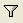

三元配置分散分析
ThreeWay-ANOVA
概要
三元配置分散分析では、従属変数に対する主効果と、3 つの因子のすべての組み合わせ間の交互作用効果を検定します。
必要なOriginのバージョン: OriginPro 2016 SR0以降
学習する項目
- 実際のデータで三元配置の分散分析を実行する方法
- 算出された結果の読み取り方
ユーザストーリー
世界銀行よりいくつかのデータを取得します。これには、地域(Asia/Europe/Africa, etc.), 発展途上国索引 （発展途上国/先進国）と年(2000/2005/2010)の3つの要素が含まれます。これらの3つの要素がインターネットユーザの人数にどのような影響を及ぼすのか、またはこれらのグループ間になにか大きな違いはあるのか調べようと思います。
三元配置分散分析の実行
- メニューからヘルプ：ラーニングセンターを選択して、ラーニングセンターダイアログを開きます。左側のリストから解析サンプルを選択し、右側のサンプルドロップダウンリストから統計 - ANOVAを選択します。
- 表示されたリストの3つ目の項目をダブルクリックして、三元配置の分散分析(Pro)フォルダを開きます。
- ソースデータを含んでいるSheet1 ワークシートをクリックします。
- 統計：ANOVA：三元配置分散分析を選択します。
- 開いたダイアログの入力タブで、入力データを インデックスに設定します。入力データのブランチを開いて、因子Ａに列C、因子Ｂに列D、因子Ｃに列B、データに列Eをそれぞれ選択します。

- モデルのタブで、全てのボックスが選択されていることを確認します。ここでは、全ての要素モデルが、三元配置の分散分析に利用されるように決定します。
- OKをクリックして、ダイアログを閉じます。
- ANOVA3way１に移動します。全般ANOVAテーブルに主要な影響と相互作用のためのANOVA検定の結果が表示されます。もし、P値が0.05よりも小さかった場合、対応する要因にあるレベルは、明らかに異なることを意味します。表の下にあるフットノートの結果に注目します。
- 全般ANOVA テーブル上から、二元相互ファクター発展途上国索引*年は明らかに有効ではない (p-value = 0.23954)と分かります。三元相互ファクター地域*発展途上国*年も有効でありません。(p-value = 0.88834).
相互作用の調査
次に、有効な相互作用を表す要因について調べます。
- ANOVA3Way1シートにある錠前マークをクリックし、パラメータを変更をコンテキストメニューから選びます。
- モデルタブで、効果A*Bと効果A*B*Cのチェックを外し、これらの要因間の相互作用を検出しないこととします。
- 平均比較のタブを開いて、Bonferroni のチェックボックスにチェックを入れます。BonferroniはPost-hoc検定(事後検定)に最もよく使われる手法です。タイプ I エラー全体を制御します。
- 平均値プロットのタブを開いて、チェックできる全てのチェックボックスにチェックします。(効果A*Bと効果A*B*Cはモデルに含んでいないためチェックできません)
- OKをクリックして、ダイアログを閉じます。
結果の解釈
ワークシートANOVA3Way1の結果が新しい計算パラメータを使いアップデートされています。
全般ANOVA
表より、残っている全ての効果は大きく異なっていることが分かりますそれぞれのグループ間の相違を検出するために、平均比較結果とプロット平均を使うことが出来ます。
比較平均と3つの主要因のプロット平均
ANOVA：平均比較：Bonferroni Testと選択すると、個々の影響のための平均比較テーブルを確認出来ます。これは、グループのメンバー間のペアワイズ比較のための結果シート下側にあるプロット平均と併せて使える便利な機能です。
発展途上国と先進国との比較
上記の結果より、発展途上国のインターネットユーザ数は先進国のユーザ数よりとても少ないことが分かります。
年毎の比較
上記の結果より、2000年から2010年にかけてインターネットユーザ数が特に増えているのが分かります。
地域ごとの比較
上記の結果より以下がいえます。
- アフリカのインターネットユーザ数は他の国々よりも明らかに少ない。
- 中東のインターネットユーザ数はヨーロッパやアメリカと比較すると明らかに少ない。
- その他の国々についてはさほど大きな差はない。
違うグループ間での同じレベルによる比較
相互関係の平均比較結果から、異なるグループ間のサンプルレベルを比較することが出来ます。表示させたい結果を早く見るためのデータフィルターの使い方を紹介します。
- ANOVA3Way1のワークシートで、ANOVA：平均比較：Bonferroni検定と開きます。
- 相互作用の隣にある三角形のボタンをクリックして、コンテキストメニューから新しいシートとしてコピーを作成するを選択します。
- 作成された相互作用のシートに移ります。結果にデータフィルターを適用することで、様々な地域の発展途上国と先進国を比較することができます。
- C列を選択し、メニューバーからデータフィルタの追加/削除ボタンをクリックして、データフィルタを列に追加します。
- 列ヘッダのフィルタアイコン をクリックし、カスタムフィルタを選択します。
- 開いたダイアログの右下にある、詳細のチェックボックスを選択します。条件ボックスに次のスクリプトを記入します。
col(c)$==col(f)$
- 以下から次のことがわかります。
- アフリカと中東では、先進国と発展途上国のインターネットユーザ数に大きな違いはありません。
- 以下の4大陸では、先進国のインターネットユーザ数が発展途上国での数より大幅に多くなっています。
| 1.Asia
|
2.Europe
|
3.The Americas
|
4.Oceania
|